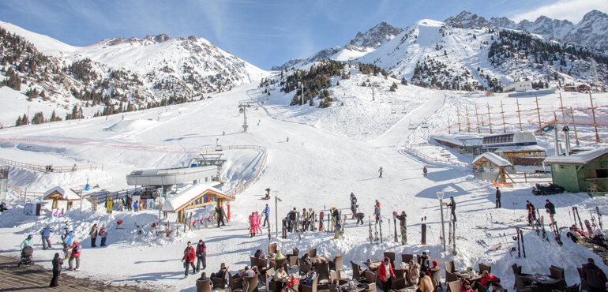

Almaty is a city of a republican significance and the latgest settlement in the Republic of Kazakhstan. Almaty is located in the South-East of Kazakhstan.It lies in the northern foothills of the Trans-Ili Alatau at an elevation of 700–900 metres, where the Bolshaya and Malaya Almaatinka rivers emerge onto the plains.
Akimat of the city of AlmatyThe main interest of foreign tourists is ecotourism – mountain hiking and river rafting in summer and skiing in winter.
Shymbulak Ski Resort, Almaty, Kazakhstan
Medeu open-air skating rink in the mountains, Almaty, Kazakhstan